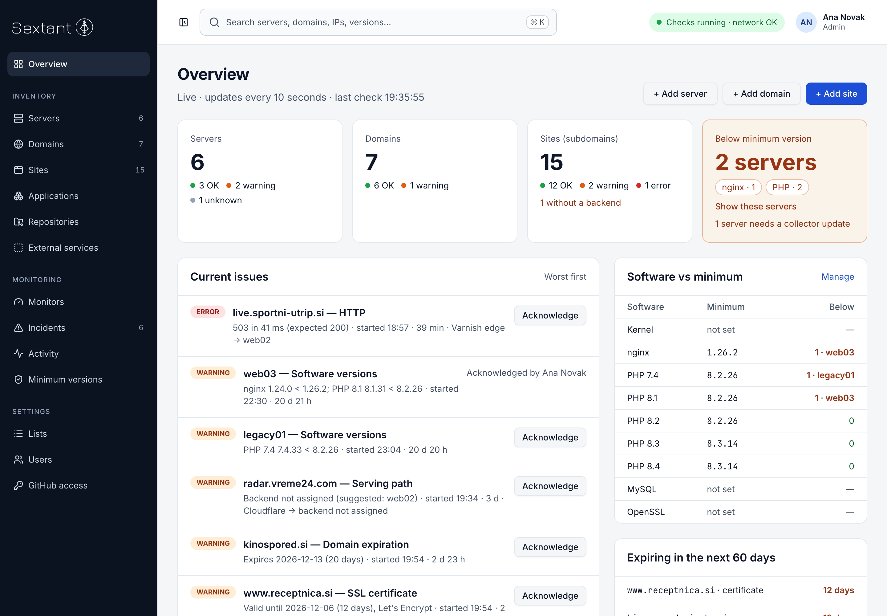
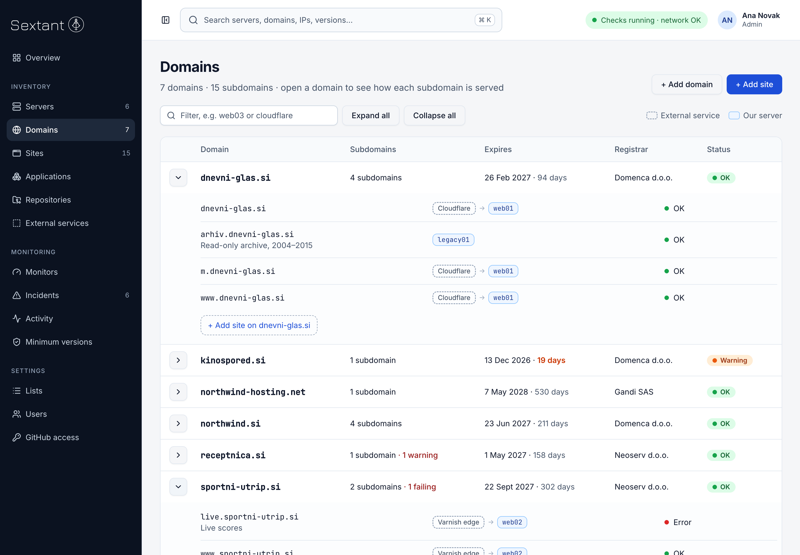
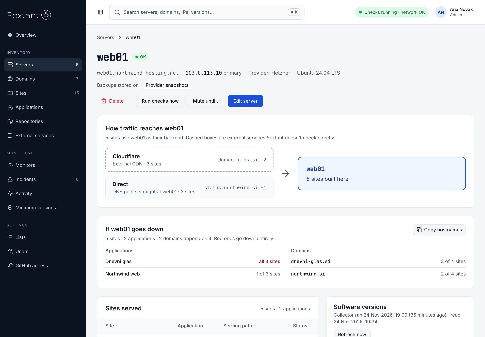
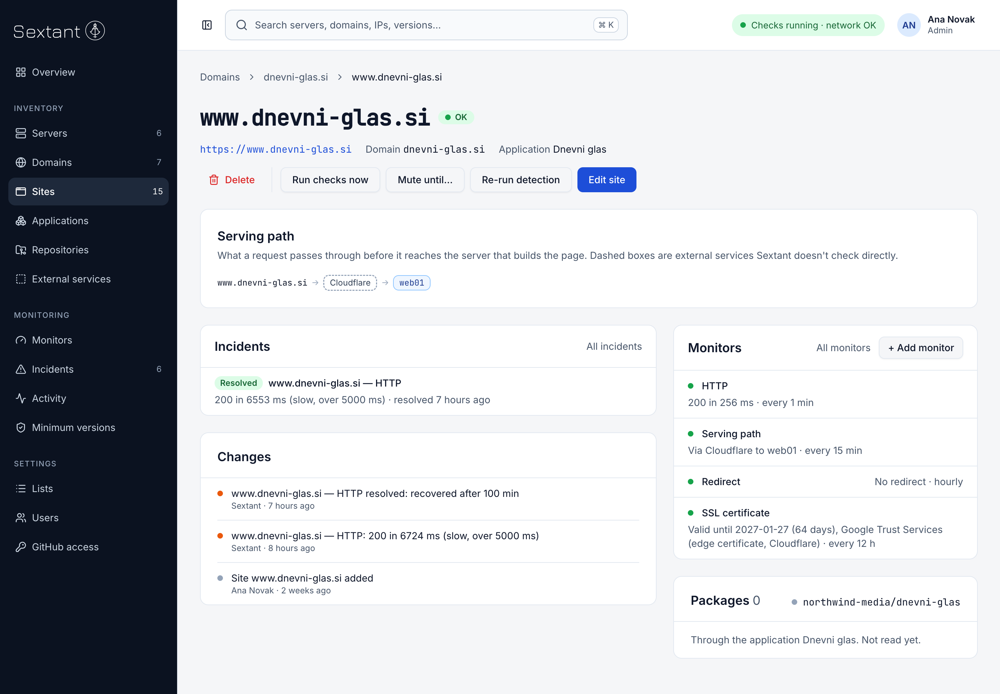
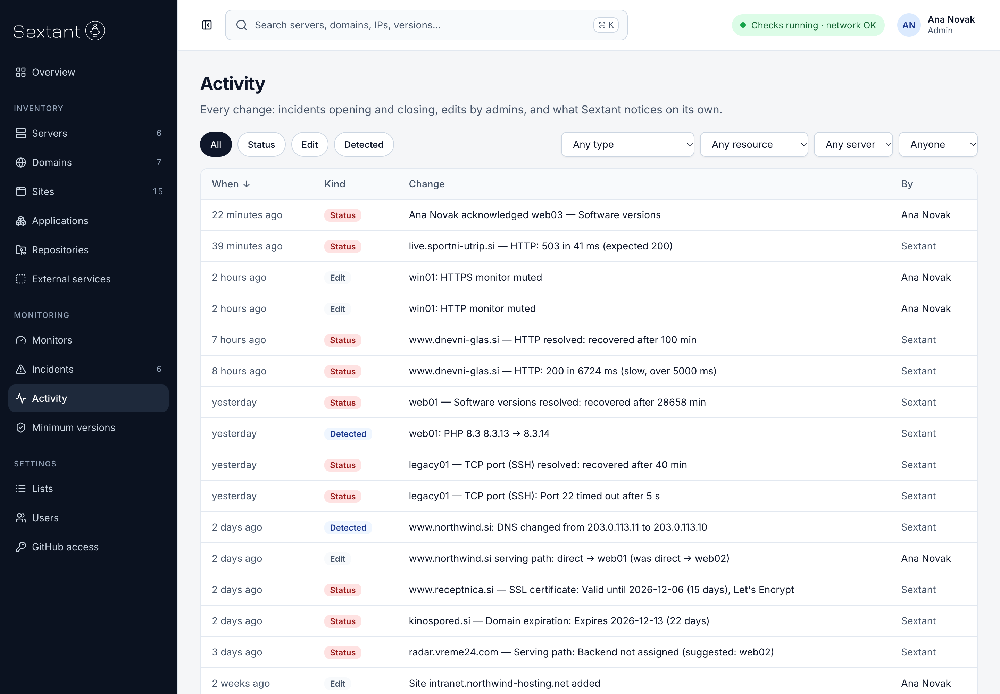

Every domain, site and server you run, and how they connect.
Sextant is one place for your infrastructure map: which server builds each site, what sits in front of it, and what software runs where. On top of that map it checks health on a schedule and tells you when something breaks or is about to.

The knowledge lives in people's heads. Put it in one place.
Twenty servers, eighty sites, domains spread across registrars. Sextant answers the questions you'd otherwise ask in chat.
An overview first, monitoring on top.
The map of domains, sites, servers, paths and versions has to be right and easy to read. Health checks build on it.
Inventory
Servers with their IPs, OS and backup locations. Domains with registrar and expiry. Every subdomain as a site, and applications that answer on several hostnames.
Serving paths
The steps a request takes: an external service like Cloudflare or Varnish, then the server that builds the page. When a server goes down, its sites' incidents group under it.
Add a site from its URL
Paste a URL. Sextant works out the domain, where DNS points, the backend server and a first probe, each marked Detected, Suggested or Not found. Nothing is saved until you confirm.
Software versions
Kernel, nginx, PHP, MySQL and OpenSSL per server, collected by a small cron script. After a CVE, set the minimum safe version and see every server below it.
Application packages
Reads lock files from the GitHub repositories your sites link to, with read-only tokens. Set a minimum per major or minor line and see which applications fall below it.
Incidents and alerts
HTTP, certificate, redirect, ping, port, nameserver and domain expiry checks on a schedule. Failures become incidents, confirmed before anyone is alerted, and posted to Discord when they open, escalate and resolve.
Calm by design.
A monitoring tool you learn to ignore is worse than none. These rules keep Sextant quiet until it matters.
Nothing to log in to
Sextant never holds SSH or other credentials to your servers. Servers publish what it needs, behind a token.
Incidents, not logs
Meaningful periods of trouble, not a wall of individual failed checks.
Unknown is not Error
A check that couldn't run never opens an incident. Canary checks catch Sextant's own network going down.
Confirm before alerting
A single transient failure never sends a notification. Mute what you expect, with a reminder when the mute ends.
Detection proposes, you confirm
Sextant suggests backends, domains and redirects. An admin decides what gets saved.
Admins and readers
The whole team can see everything. Only admins change it, and every change shows who made it.
Light and dark, follows your system.
Shown with fictional demo data you can seed yourself.




Run it with demo data in a few minutes.
The demo seeder runs three days of checks against fakes, with no network access. Sign in as admin@example.com / password.
- BackendLaravel, PHP 8.4
- FrontendInertia, Vue 3, TypeScript, shadcn-vue
- DataMySQL 9.7, Redis with Horizon
- AlertsDiscord, with Sentry for Sextant's own health
$ git clone https://github.com/Media24si/Sextant.git $ cd Sextant $ composer install && npm ci $ cp .env.example .env && php artisan key:generate # needs an empty MySQL database named sextant_demo $ DB_DATABASE=sextant_demo php artisan migrate:fresh \ --seed --seeder=DemoSeeder $ composer run dev
Deploying for real? The README runbook covers requirements, the collector, tokens and backups.
Know what you run.
Sextant is free and open source under the MIT license. Issues and pull requests are welcome.